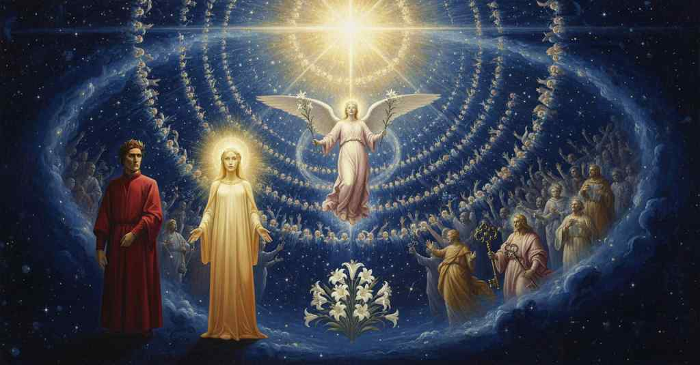

Paradiso — Canto 23

1
Come l’augello, intra l’amate fronde,
As the bird, among the beloved boughs,
愛する葉陰のなか、鳥が
2
posato al nido de’ suoi dolci nati
perched on the nest of its sweet young
愛しい雛たちの巣に止まり
3
la notte che le cose ci nasconde,
during the night that hides things from us,
万物を我らから隠す夜の間に、
4
che, per veder li aspetti disïati
who, to see their desired faces
待ち望む姿を見るために
5
e per trovar lo cibo onde li pasca,
and to find the food with which to feed them,
また彼らを養う食物を見つけるために、
6
in che gravi labor li sono aggrati,
in which heavy labors are pleasing to it,
その重い労苦さえもが喜ばしいのだが、
7
previene il tempo in su aperta frasca,
anticipates the time on an open branch,
時を先んじて開けた枝の上に止まり、
8
e con ardente affetto il sole aspetta,
and with ardent affection awaits the sun,
熱い愛情をもって太陽を待ち、
9
fiso guardando pur che l’alba nasca;
gazing fixedly just so that the dawn may be born;
夜明けが生まれるのをただじっと見つめるように、
10
così la donna mïa stava eretta
so my lady stood erect
そのように我が貴婦人はまっすぐに立ち
11
e attenta, rivolta inver’ la plaga
and attentive, turned toward the region
注意深く、あの方角を向いていた
12
sotto la quale il sol mostra men fretta:
beneath which the sun shows less haste:
その下では太陽が歩みを最も緩めて見える。
13
sì che, veggendola io sospesa e vaga,
so that, seeing her suspended and eager,
それゆえ、待ちわびて心弾む彼女を見て、
14
fecimi qual è quei che disïando
I became like one who, desiring,
私は、何かを願いながらも
15
altro vorria, e sperando s’appaga.
would wish for something else, and in hoping is content.
別のものを欲し、希望のうちに満たされる者のようになった。
16
Ma poco fu tra uno e altro quando,
But little was the time between one moment and the next,
しかし、一方と他方の間には、わずかな時しかなく、
17
del mio attender, dico, e del vedere
of my waiting, I say, and of the sight
私の待つことと、見ることの、と言うべきか、
18
lo ciel venir più e più rischiarando;
of the heaven growing more and more bright;
天がますます明るくなってくるのを。
19
e Bëatrice disse: «Ecco le schiere
and Beatrice said: “Behold the hosts
そしてベアトリーチェは言った。「見よ、あれが軍勢です
20
del trïunfo di Cristo e tutto ’l frutto
of the triumph of Christ and all the fruit
キリストの凱旋の、そしてすべての果実です
21
ricolto del girar di queste spere!».
gathered by the turning of these spheres!”.
これらの天球の回転によって収穫された」。
22
Pariemi che ’l suo viso ardesse tutto,
It seemed to me that her face was all aflame,
私には彼女の顔がすべて燃えているように思われ、
23
e li occhi avea di letizia sì pieni,
and her eyes were so full of gladness,
その目は喜びに満ちあふれていたので、
24
che passarmen convien sanza costrutto.
that I must pass over it without description.
私は言葉で語ることなく通り過ぎねばならない。
25
Quale ne’ plenilunïi sereni
As in the serene full moons
晴れ渡った満月の夜に
26
Trivïa ride tra le ninfe etterne
Trivia smiles among the eternal nymphs
トリヴィアが永遠のニンフたちの間で微笑み、
27
che dipingon lo ciel per tutti i seni,
who paint the sky through all its vaults,
彼女らが天の隅々までを彩るように、
28
vid’ i’ sopra migliaia di lucerne
I saw above thousands of lanterns
私は幾千もの灯火の上に
29
un sol che tutte quante l’accendea,
a sun that was kindling all of them,
そのすべてを照らす一つの太陽を見た、
30
come fa ’l nostro le viste superne;
as ours does the supernal sights;
我らの太陽が天上の星々を照らすように。
31
e per la viva luce trasparea
and through the living light there shone through
そしてその生ける光を通して透けて見えた
32
la lucente sustanza tanto chiara
the shining substance so bright
輝く実体はあまりにまばゆく
33
nel viso mio, che non la sostenea.
to my sight, that it could not sustain it.
私の顔には、それに耐えることができなかった。
34
Oh Bëatrice, dolce guida e cara!
Oh Beatrice, sweet and dear guide!
おおベアトリーチェ、甘美なる導き手、愛しき人よ！
35
Ella mi disse: «Quel che ti sobranza
She said to me: "What overwhelms you
彼女は私に言った、「あなたを圧倒するものは
36
è virtù da cui nulla si ripara.
is a power from which nothing is shielded.
何ものも防ぎ得ぬ力なのです。
37
Quivi è la sapïenza e la possanza
Here is the wisdom and the power
ここには、天と地の間に道を開いた
38
ch’aprì le strade tra ’l cielo e la terra,
that opened the roads between heaven and earth,
知恵と力があるのです、
39
onde fu già sì lunga disïanza».
for which there was once so long a desire."
かつてあれほど長い渇望があった道を」。
40
Come foco di nube si diserra
As fire from a cloud unfastens itself
雲から火が解き放たれるように
41
per dilatarsi sì che non vi cape,
to expand so that it has no room there,
膨張して収まりきらなくなり、
42
e fuor di sua natura in giù s’atterra,
and against its nature falls down to earth,
その本性に背いて地上に落ちるように、
43
la mente mia così, tra quelle dape
so did my mind, among that banquet,
私の精神もまた、かの饗宴のうちにあって
44
fatta più grande, di sé stessa uscìo,
made greater, go out of itself,
より大きくなり、我を忘れ、
45
e che si fesse rimembrar non sape.
and what it became it cannot remember.
いかにしてそうなったか思い出す術も知らない。
46
«Apri li occhi e riguarda qual son io;
"Open your eyes and look at what I am;
「目を開けて、私がどのような者か見なさい。
47
tu hai vedute cose, che possente
you have seen things, that powerful
あなたは物事を見たのです、それによって
48
se’ fatto a sostener lo riso mio».
you have become to sustain my smile."
私の微笑みを支えることができるようになったのです」。
49
Io era come quei che si risente
I was like one who recovers
私は、忘れ去られた幻から
50
di visïone oblita e che s’ingegna
from a forgotten vision and who strives
目覚めた者のようだった、そして懸命に
51
indarno di ridurlasi a la mente,
in vain to bring it back to mind,
無駄にそれを心に取り戻そうとする者のように、
52
quand’ io udi’ questa proferta, degna
when I heard this offer, worthy
この申し出を聞いた時、それは
53
di tanto grato, che mai non si stingue
of so much gratitude that it never fades
過去を記す書物から
54
del libro che ’l preterito rassegna.
from the book that reviews the past.
決して消えぬほどの感謝に値するものだった。
55
Se mo sonasser tutte quelle lingue
If now all those tongues should sound
もし今、ポリュムニアが姉妹たちと共に
56
che Polimnïa con le suore fero
that Polyhymnia with her sisters made
その最も甘美な乳で
57
del latte lor dolcissimo più pingue,
most rich with their sweetest milk,
最も豊かにした、あのすべての舌が鳴り響いたとしても、
58
per aiutarmi, al millesmo del vero
to help me, a thousandth of the truth
私を助けるため、聖なる微笑みと
59
non si verria, cantando il santo riso
would not be reached, in singing of the holy smile
聖なるお顔がいかに清らかであったかを歌うのに、
60
e quanto il santo aspetto facea mero;
and how it made the holy face so pure;
真実の千分の一にも至らないだろう。
61
e così, figurando il paradiso,
and so, in figuring paradise,
そして、このように天国を描写するにあたっては、
62
convien saltar lo sacrato poema,
the sacred poem must leap,
この聖なる詩は跳躍せねばならぬ、
63
come chi trova suo cammin riciso.
like one who finds his path cut off.
道が断たれているのを見出した者のように。
64
Ma chi pensasse il ponderoso tema
But he who might think of the ponderous theme
しかし、この重々しい主題と
65
e l’omero mortal che se ne carca,
and the mortal shoulder that is burdened with it,
それを背負う定命の肩を思う者は、
66
nol biasmerebbe se sott’ esso trema:
would not blame it if it trembles under it:
その下で震えても、それを非難しまい。
67
non è pareggio da picciola barca
it is not a sea-passage for a little boat,
この大胆な舳先が切り裂いて進むものは、
68
quel che fendendo va l’ardita prora,
that which my daring prow goes cleaving,
小舟のための航海ではない、
69
né da nocchier ch’a sé medesmo parca.
nor for a helmsman who would spare himself.
また、己を惜しむ舵手のためのものでもない。
70
«Perché la faccia mia sì t’innamora,
“Why does my face so enamor you,
「なぜ我が顔はかくも汝を恋い慕わせるのか、
71
che tu non ti rivolgi al bel giardino
that you do not turn to the beautiful garden
汝はかの美しき庭に顔を向けぬのか
72
che sotto i raggi di Cristo s’infiora?
that blossoms beneath the rays of Christ?
キリストの光の下に花咲くかの庭に？
73
Quivi è la rosa in che ’l verbo divino
Here is the rose in which the divine Word
ここには神の御言葉が
74
carne si fece; quivi son li gigli
made itself flesh; here are the lilies
肉体と成りたもうた薔薇があり、ここには百合がある
75
al cui odor si prese il buon cammino».
by whose fragrance the good path was taken.”
その香りに導かれ善き道は進まれたのだ」。
76
Così Beatrice; e io, che a’ suoi consigli
Thus Beatrice; and I, who to her counsels
かくベアトリーチェは語り、我は、その勧めに
77
tutto era pronto, ancora mi rendei
was wholly ready, again gave myself
全く従うつもりで、再び身を投じた
78
a la battaglia de’ debili cigli.
to the battle of my weak eyelids.
弱き睫毛の戦いへと。
79
Come a raggio di sol, che puro mei
As by a ray of sun, that purely passes
太陽の光が、純粋に通り抜けるように
80
per fratta nube, già prato di fiori
through a fractured cloud, a meadow of flowers
裂けた雲を、かつて花の牧場を
81
vider, coverti d’ombra, li occhi miei;
was seen by my eyes, once covered in shadow;
影に覆われていた、我が両眼が見たように、
82
vid’ io così più turbe di splendori,
so I saw many throngs of splendors,
我はかくも多くの輝きの群れを見た、
83
folgorate di sù da raggi ardenti,
struck from above by burning rays,
燃える光線に上から雷光に打たれ、
84
sanza veder principio di folgóri.
without seeing the source of the lightning flashes.
雷光の源は見えぬままに。
85
O benigna vertù che sì li ’mprenti,
O benign power that so imprints them,
おお、かくも彼らに印を刻む慈悲深き徳よ、
86
sù t’essaltasti, per largirmi loco
you exalted yourself on high, to grant me space
天高く汝は昇り、場を空けられた
87
a li occhi lì che non t’eran possenti.
for my eyes there that were not strong enough for you.
汝に耐えられなかったかの両眼のために。
88
Il nome del bel fior ch’io sempre invoco
The name of the beautiful flower that I always invoke
我が常に呼び求める美しき花の名は
89
e mane e sera, tutto mi ristrinse
both morning and evening, completely constrained
朝に夕に、我が心を完全に集中させた
90
l’animo ad avvisar lo maggior foco;
my soul to gazing on the greatest fire;
いと高き炎を見つめることに。
91
e come ambo le luci mi dipinse
and as both my eyes depicted for me
そして我が両の眼が心に描いたように
92
il quale e il quanto de la viva stella
the quality and the quantity of the living star
かの生ける星の質と量を
93
che là sù vince come qua giù vinse,
that triumphs up there as it triumphed down here,
天上で勝ちたもうように地上でも勝ちたもうた星の、
94
per entro il cielo scese una facella,
down through the heaven descended a little torch,
天の中を一つの松明が下りてきた、
95
formata in cerchio a guisa di corona,
formed in a circle in the guise of a crown,
冠の如く円を形作り、
96
e cinsela e girossi intorno ad ella.
and encircled her and revolved around her.
彼女を囲み、その周りを回転した。
97
Qualunque melodia più dolce suona
Whatever melody sounds sweetest
どんなに甘美な旋律が奏でられても
98
qua giù e più a sé l’anima tira,
down here and most draws the soul to itself,
この地上で、そして魂をより惹きつけても、
99
parrebbe nube che squarciata tona,
would seem a cloud that, torn apart, thunders,
それは引き裂かれて雷鳴を轟かせる雲のようであろう、
100
comparata al sonar di quella lira
compared to the sound of that lyre
あの竪琴の響きに比べれば
101
onde si coronava il bel zaffiro
with which was crowned the beautiful sapphire
それによって美しいサファイアは冠され、
102
del quale il ciel più chiaro s’inzaffira.
by which the clearest heaven is ensapphired.
それによって最も清澄な天はサファイア色に染まるのだ。
103
«Io sono amore angelico, che giro
"I am angelic love, who circles
「私は天使の愛、私は巡る
104
l’alta letizia che spira del ventre
the high gladness that breathes from the womb
あの腹から放たれる高き喜びを
105
che fu albergo del nostro disiro;
that was the dwelling place of our desire;
それは我らが渇望の宿りであった。
106
e girerommi, donna del ciel, mentre
and I shall circle, Lady of Heaven, while
そして私は巡り続けるであろう、天の貴婦人よ、あなたが
107
che seguirai tuo figlio, e farai dia
you follow your son, and make more divine
あなたの御子に従い、そして神聖にする間
108
più la spera suprema perché lì entre».
the supreme sphere because you enter there."
至高の天球を、そこへ入るがゆえに」。
109
Così la circulata melodia
Thus the circulated melody
かくして、その巡る旋律は
110
si sigillava, e tutti li altri lumi
sealed itself, and all the other lights
封じられ、そして他のすべての光は
111
facean sonare il nome di Maria.
made the name of Mary resound.
マリアの名を響かせた。
112
Lo real manto di tutti i volumi
The royal mantle of all the volumes
世界のすべての巻物を包む王者の衣は、
113
del mondo, che più ferve e più s’avviva
of the world, which most fervently and quickens
神の息吹と習わしにおいて、
114
ne l’alito di Dio e nei costumi,
in the breath of God and in His ways,
最も熱く、最も活気づくのだが、
115
avea sopra di noi l’interna riva
had its inner shore above us
我らの上方にその内なる岸辺を
116
tanto distante, che la sua parvenza,
so distant, that its appearance,
あまりに遠くに有していたので、その姿は、
117
là dov’ io era, ancor non appariva:
there where I was, did not yet appear:
私がいた場所からは、まだ現れていなかった。
118
però non ebber li occhi miei potenza
therefore my eyes did not have the power
それゆえ私の両眼には力がなかった
119
di seguitar la coronata fiamma
to follow the crowned flame
冠された炎を追いかける
120
che si levò appresso sua semenza.
that rose up after her seed.
それは自らの胤の後に昇っていった。
121
E come fantolin che ’nver’ la mamma
And like a little infant who toward its mother
そして乳を飲んだ後、母に向かって
122
tende le braccia, poi che ’l latte prese,
stretches its arms, after it has taken milk,
腕を伸ばす幼児のように、
123
per l’animo che ’nfin di fuor s’infiamma;
through the soul that even outwardly is inflamed;
心が外にまで燃え上がるために、
124
ciascun di quei candori in sù si stese
each of those splendors stretched upward
それらの白き輝きはそれぞれ上へと
125
con la sua cima, sì che l’alto affetto
with its summit, so that the high affection
その頂を伸ばし、そのようにして高き愛情が
126
ch’elli avieno a Maria mi fu palese.
that they had for Mary was made plain to me.
彼らがマリアに抱くものが私には明らかになった。
127
Indi rimaser lì nel mio cospetto,
Then they remained there in my sight,
やがて彼らは私の目の前に留まり、
128
‘Regina celi’ cantando sì dolce,
'Regina celi' singing so sweetly,
「レジーナ・チェリ」をあまりに甘美に歌い、
129
che mai da me non si partì ’l diletto.
that the delight has never departed from me.
その喜びは決して私から去らなかった。
130
Oh quanta è l’ubertà che si soffolce
Oh how great is the abundance that is stored up
おお、いかに豊かな実りであろうか、支えられているのは
131
in quelle arche ricchissime che fuoro
in those richest arks that were
あのいとも富める櫃の中に、それらはかつて
132
a seminar qua giù buone bobolce!
down here good sowers for the harvest!
この地上に善き農夫であった！
133
Quivi si vive e gode del tesoro
Here one lives and rejoices in the treasure
ここでは、かの宝によって生き、楽しむ
134
che s’acquistò piangendo ne lo essilio
that was acquired weeping in the exile
それはバビロンの流謫において泣きながら得られたもの
135
di Babillòn, ove si lasciò l’oro.
of Babylon, where one left the gold.
そこでは黄金は打ち捨てられた。
136
Quivi trïunfa, sotto l’alto Filio
Here triumphs, under the high Son
ここでは、神とマリアの高き御子の下で、
137
di Dio e di Maria, di sua vittoria,
of God and of Mary, in his victory,
自らの勝利を
138
e con l’antico e col novo concilio,
and with the old and the new council,
凱旋し、そして古きと新しき公会議と共に、
139
colui che tien le chiavi di tal gloria.
he who holds the keys of such glory.
かくの如き栄光の鍵を持つ者がいる。